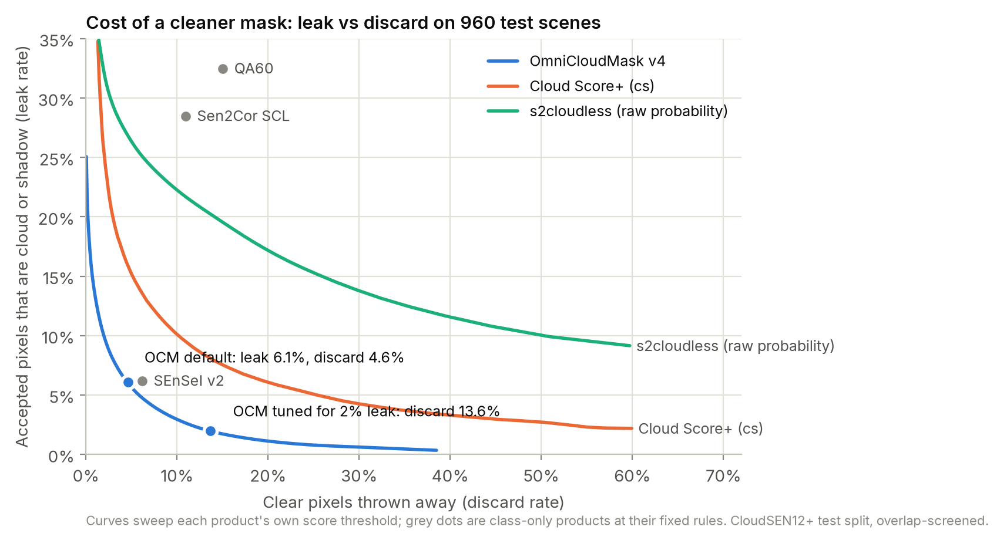
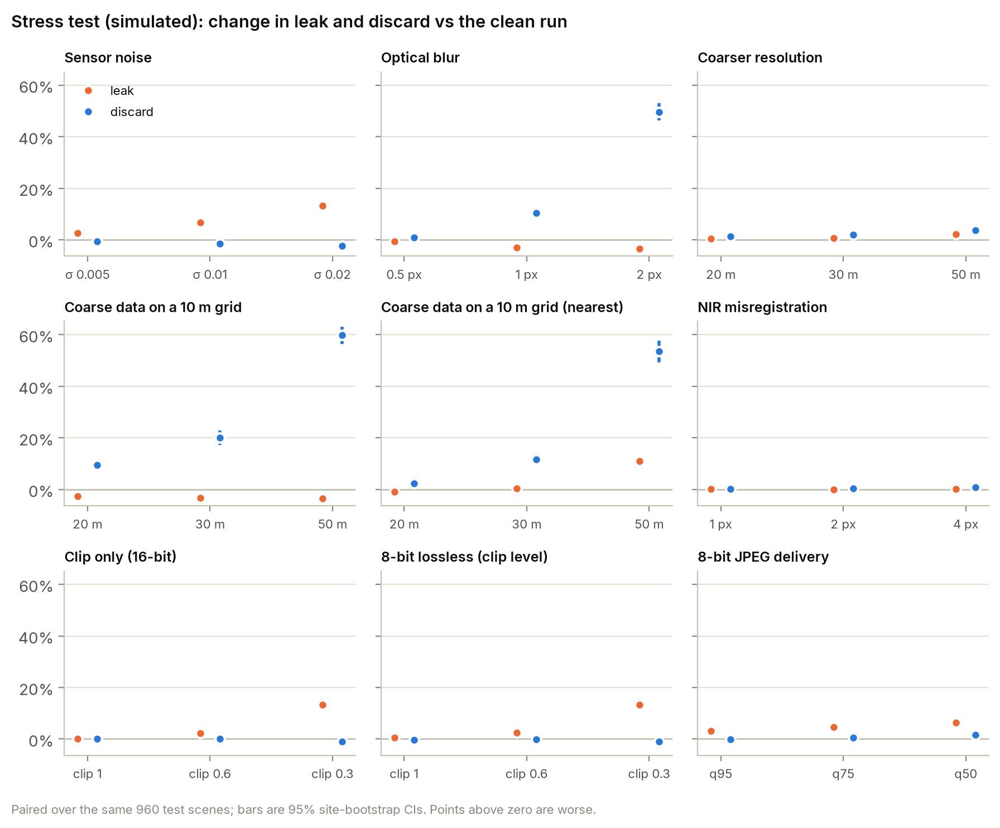

Data. CloudSEN12+ expert-labeled test split: 960 Sentinel-2 scenes (5.1 km, 10 m) at 192 sites worldwide, 2018-2020, at L1C and L2A. The validation split was used only to choose operating points.
Independence from training data. The model's published training set includes CloudSEN12 material from every split, so its 100,528 training records were checked directly against the test scenes: no shared scene ids (including 2,754 test/validation-tagged training records), no shared acquisitions; 10 scenes that may overlap a custom training scene were removed. Removing every scene on a Kappaset training tile gives leak 6.2% (headline 6.1%). This screen has limits; it does not prove that no overlap remains.
Comparators. Sentinel-2 QA60 and Sen2Cor SCL (shipped with the products), s2cloudless (upstream defaults), Cloud Score+ (cs ≥ 0.60), UnetMobV2 and SEnSeI v2.
Metrics. Leak: share of accepted pixels that are cloud or shadow. Discard: share of clear pixels rejected. Miss: share of cloud/shadow accepted. Scene filter: keep a 5.1 km patch if estimated cloud+shadow cover ≤ 10%. All methods are scored on the same pixels; abstentions count as rejected. 95% confidence intervals by bootstrap over sites; comparisons are paired.
Severity. High: affects a default decision path, large error, measured on real data. Medium: material error in a common condition on real data, a trade-off the client must set, or a large simulated effect on a common processing path. Low: limited evidence or moderate simulated effects. Info: checked, small or no measured effect.
| # | Severity | Finding and evidence | Recommendation |
|---|---|---|---|
| F1 | High | Scene filters built on the Sen2Cor SCL band keep cloudy scenes On the 5.1 km test patches, keeping a patch when its SCL cloud+shadow cover is at most 10% keeps patches of which 43.4% are above 10% by the expert labels; SCL under-reports cover by -13 pp on average. The same rule using OmniCloudMask cover: 5.9% above, and 4.0% of good patches rejected (SCL: 16.6%). | Gate on OmniCloudMask-derived cover instead of the SCL band. Measured: cloud+shadow inside kept patches after masking falls from 3.4% to 1.6% [0.7, 2.6]. Full-granule filtering was not tested. |
| F2 | Medium | At its default setting, about 6% of accepted pixels are cloud or shadow Leak 6.1% [5.3, 7.0] of accepted pixels (thin cloud 2.9%, shadow 1.9%, thick 1.3%); discard 4.6% [4.0, 5.3] of clear pixels. | For leak-sensitive uses (time series, change detection): accept if P(clear) ≥ 0.8529 (chosen on the validation split for a 2% leak target). Test: leak 2.0% [1.4, 2.6] at 13.6% discard. Buffering the mask is the weaker lever: none of the tested buffers (0 to 8 px) met the target; 8 px leaks 3.6% at 13.1% discard. |
| F3 | Medium | Coarse data resampled onto a finer grid is over-masked (simulated) Simulated 30 m data put on a 10 m grid with bilinear interpolation: discard 24.6% (+20.0 pp); with nearest-neighbour instead: 16.3% (+11.7 pp); the same 30 m data masked on its own grid: 6.6% (+2.0 pp). Native-grid runs at 20/30/50 m: +1.2 pp / +2.0 pp / +3.6 pp. | Where the pipeline allows, run the mask on the sensor's native grid and resample the mask. If imagery must be resampled to a finer grid first, validate the mask on that product; real resamplers and sensor optics differ from this simulation. |
| F4 | Medium | Clipping bright reflectance lets cloud through (simulated) Clipping at 0.3 reflectance (close to the Sentinel-2 true-colour stretch) raises leak by +13.3 pp with 16-bit values and +13.3 pp when also quantized to 8 bits; clipping at 1.0: +0.0 pp. JPEG on top of 8-bit (clip 0.6, +2.4 pp) adds little at quality 95 (+3.1 pp in total) and more at quality 50 (+6.3 pp). | Feed unclipped reflectance; avoid running the mask on stretched visual products. |
| F5 | Medium | Higher leak over water (11.0% vs 6.1% overall) Leak over water 11.0% [6.3, 15.9] across 98 sites (thick cloud 4.2% vs 0.9% over grassland); the two worst sites hold 34% of it. | For coastal, inland-water and flood work, spot-check a local sample; the stricter threshold above was not validated separately for water. |
| F6 | Medium | Small amounts of cloud are missed in mostly clear scenes In scenes with 1-30% cloud, 16.6% [13.7, 19.8] of the cloud and shadow present is accepted as clear (overcast scenes: 3.3%). These are the scenes a cover gate keeps. | The threshold recommendation reduces leak overall; it was not tuned for this regime separately. |
| F7 | Medium | Usable ground is discarded in heavily clouded scenes In scenes with 70-99% cloud, 19.7% [17.2, 22.4] of the clear pixels are rejected. | If gap-filling from cloudy scenes matters, validate a lower threshold for that regime (not tested here). |
| F8 | Low | Snow and ice: highest observed leak, weakest evidence Leak 13.0% [6.4, 18.4] over only 14 sites, 67% of it from two sites, mostly thin cloud over snow, where expert labels are least certain (not adjudicated here). | Validate locally before relying on the mask in snow-covered regions. |
| F9 | Low | Added sensor noise increases leak (simulated) Gaussian noise with a standard deviation of 0.005 reflectance raises leak by +2.6 pp [1.9, 3.6]; 0.01 by +6.7 pp. | Re-validate before using the mask on noisier imagery than Sentinel-2. |
| F10 | Info | Small measured effects within the tested range L1C vs L2A input: leak +0.2 pp [0.0, 0.5]. One tested per-band gain/offset change: 99.99% pixel agreement on a fifth of the test scenes (the model normalizes each band per image). NIR shifted 4 px diagonally: discard +0.9 pp [0.6, 1.2], leak +0.1 pp [-0.2, 0.5]. | None required within these ranges; larger shifts or other calibration errors were not tested. |

Figure 1. Leak against discard for every threshold of the score-based masks; grey points are fixed-rule products. Test split.

Figure 2. Stress test (simulated degradations): change in leak and discard against the clean run on the same scenes, with 95% site-bootstrap CIs. "Coarse data on a 10 m grid" is 20/30/50 m data put on a 10 m grid before masking (bilinear; nearest-neighbour as a control); "Coarser resolution" is the same data masked on its native grid.
Reproducibility: pinned dataset revision, model weights verified by SHA-256,
one-command pipeline (make all), unit tests. Data: CloudSEN12+ (CC0); contains modified
Copernicus Sentinel data 2018-2020; ESA WorldCover (CC BY 4.0). Model: OmniCloudMask (MIT).